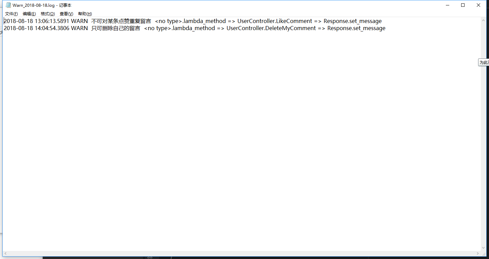

今天介绍个非常实用也非常好用的工具——NLog,这应该是.net环境下，普遍认为效率最高，功能最强，使用起来也最方便的日志类工具了，我们新上的系统日志类工具就是用的NLog,算起来我写了也就不到20行代码吧，就让我们的系统有了非常丰富的日志记录功能。
NLog是一个开源插件，地址是http://nlog-project.org/，英文好的同学可以仔细去读读人家的文档，我先飘过~
由于使用非常简单方便，所以英语不好也没关系，我就我的体验跟大家分享下，肯定也不是非常完整了，因为我也只是用了NLog提供的功能的冰山一角，只是看到好东西就忍不住要分享（xianbai）分享（xianbai）
首先，在项目里添加NLog，添加方式有很多种，推荐采用Nuget包的方式
下载如图两个文件，第二个可以不下载自己创建也行，嫌麻烦的话就都下载下来，稍加改动就可以
安装好后，先修改配置文件，注意NLog写日志的方式是异步的，所以性能很好，而且，它也支持把日志同步到文件，数据库等，因为我觉得日志这种东西，看你怎么看了，如果你做的系统每条数据都十分重要，多方的同步是很有必要的，我这里只介绍写到文件的方式，同步到数据库的方式各位自行百度吧
首选项，NLog的配置文件有几个比较关键的节点，其实对大多数人包括我来说，只要明白两个节点的意义就足够了
一个是targets节点，一个是rules节点
name：自定义该target的名字,可供rule规则里使用
type： 定义类型,官方提供的可选类型有:
Chainsaw|ColoredConsole |Console |Database|Debug|Debugger|EventLog|File|LogReceiverService|Mail|Memory|MethodCall|Network |NLogViewer|Null |OutputDebugString|PerfCounter|Trace|WebService
不过常用的还是 File \Database \Colored Console\ Mail
layouts 用来规定布局样式,语法“${属性}”,可以把上下文信息插入到日志中，官方提供的可以用的属性见文末附录
各种规则配置在logger里
name - 记录者的名字
minlevel - 最低级别
maxlevel - 最高级别
level - 单一日志级别
levels - 一系列日志级别，由逗号分隔。
writeTo - 规则匹配时日志应该被写入的一系列目标，由逗号分隔。
对了这个配置文件里定义的变量，或者叫变量标签是
1 | <variable name="variable1" value="${basedir}/logs"/> |
配置文件整明白后，就可以上代码了
这里由于业务需要我在所有有输出的地方都打上了日志
各位可以根据自己实际所需，指哪打哪就行了
1 | using NLog; |
最后看一眼效果
